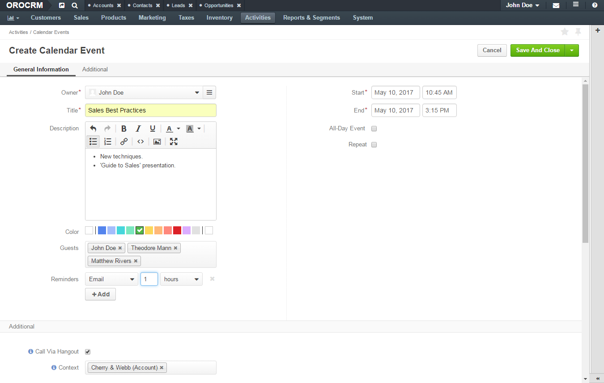
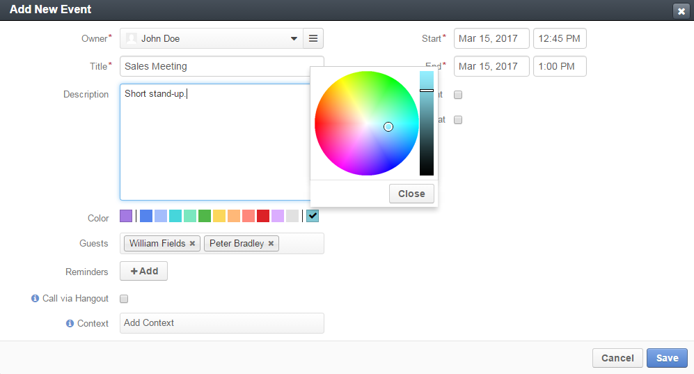
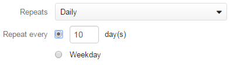
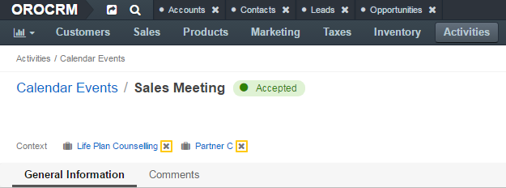

Manage Calendar Events¶
This section aggregates information about the actions related to the calendar events. The topics below guide through the steps of the procedure for every action you can launch.
- Add a Calendar Event
- View a Calendar Event
- Edit a Calendar Event
- Change a Calendar Event Time Frame in the Calendar
- Delete a Calendar Event / Task
- Delete a Bulk of Calendar Events / Tasks
- Add a Context to an Existing Calendar Event
- Remove a Context from a Calendar Event
- Comment on a Calendar Event
- Respond to a Calendar Event
- Start a Hangout Meeting
Add a Calendar Event¶
To add a calendar event when viewing a list of events:
In the main menu, navigate to Activities>Calendar Events.
The following page opens:

In the grid on the Calendar Events page, click the Create Calendar Event button in the upper-right corner of the page.
The following page opens:
On the Create Calendar Event page, fill in the Detailed Event Information as described in the section below.
Click Save and Close in the upper-right corner of the page.
Get more information on adding a calendar event from other perspectives.
Detailed Event Information¶
When adding or editing the calendar event, you might fill in the following information:
Owner—A user who is eligible to manage this event and who is responsible for it. The event appears in the calendar of the owner.
Note
By default, a person who creates an event is mentioned as its owner. Change the owner if required. Select another user from the list. You may use the search field to get dynamically filtered suggestions and then click the required name. Alternatively, you may click the hamburger menu next to the Owner field and select the owner in the Select Owner box.
Title—A name for your calendar event.
Description—Any details regarding the event: summary, agenda, etc. Use the embedded editor to format text, add images, links, etc.
Important
Whether the embedded editor is available, is specified in the configuration.
If you do not have access to the page, contact your administrator who can enable the editor at the organization level.
Color—Select the color to label the event with. The first item is the calendar color and it is selected by default. Click on a different color to change the setting. To customize the color using a color picker, click the last color in the line (initially it is blank).
Important
The list of available colors is specified in the system configuration. Please contact your administrator if you want to change it.
Add to ... or Calendar—You will see one of these additional settings if any system calendars are defined in the system.
- The Add to ... option appears when only one system calendar is defined. When enabled, the event is added to the system calendar.
- The Calendar list appears when several system calendars are defined. Select the calendar from the list to move the event to.
Guests—People invited to the event inside and outside your company.
To add a person as a guest, type their email address in the field.
The number of guests is not limited. The event appears in the calendar of every invited Oro users.
To cancel invitation, click x next to the guest name.
Reminders—A notification before the event.
Click the +Add button to configure when and how OroCommerce and OroCRM remind the participants about the event:
- Specify the type of the notification (either via the notification email or by showing a flash message in Oro application).
- Select the time units: minutes, hours, days, or weeks in advance.
- Select the delay (whole number) before the reminder is sent: number of minutes, hours, days, or weeks in advance.
To remove a reminder, click the x icon next to it.
Important
Reminders are disabled for recurring events.
Call via Hangout—Enable this option to plan a Google Hangout meeting for the calendar event. When enabled, a button that starts Hangout call appears on the event card and view page when viewed by the guest.
Important
To enable Hangouts calls, integration with Google services should be in place. Contact your administrator for more information.
Tip
For more help on Hangouts calls, see Hangouts Help on google.com.
Context—Select a record that has a meaningful relation to an event. Start entering a record name to get a dynamically filtered list of suggestions. Click the required name to select it. The event is linked to the selected item and is displayed in its Activity section.
Start—Specify day and time when the event starts. Click the day field to select a day in the calendar box. Click the time field to select a time from the list. Alternatively, you can type in date and time values.
Note
The time option is disabled when the All-day event is selected.
End—Specify day ant time when the event ends. Click the day field to select a day on the calendar dialog box. Click the time field to select a time from the list. Alternatively, you can type in date and time values.
Note
The time option is disabled when the All-day event is selected.
All-day event—Enable this option to reserve the whole day(s) for the event.
Repeat—Enable this option for a recurring event. Once you enable it, you can configure the Event Schedule as described in the section below.
Event Schedule¶
You can use the following controls to configure the frequency and schedule of the recurring event. These options are available only when the Repeat option is enabled.
Repeats—Specify how often the event repeats (daily, weekly, monthly, or yearly). Possible configuration options are:
For Daily event: Specify whether an event repeats every weekday or once in several days. In the latter case type the number of days in the corresponding field.
For Weekly event: Specify how often (every X weeks) the event repeats and select the days of the week when the event takes place.

For Monthly event: Specify how often (every X months) the event repeats and select whether it repeats on a certain date of the month or on a particular weekday (e.g. First Monday, Third Weekend Day, etc.).

For Yearly event: Specify how often (every X years) the event repeats, select the month and whether it repeats on a certain date of the month or on a particular weekday (e.g. First Monday, Third Weekend Day, etc.).

Ends—Select when the event ends. Available options are:
- Never—The event does not have any predefined finish conditions.
- After ... occurences—The event repeats the predefined number of times. Specify the required number of times in the corresponding field.
- By—Select date and time to stop recurring the event. Click the day field to select a day on the calendar box. Click the time field to select a time from the list. Alternatively, you can type in the values.
View a Calendar Event¶
To view a calendar event:
In the main menu, navigate to Activities>Calendar Events.
In the grid on the Calendar Events page, click the required calendar event.
Alternatively, you can click the ellipsis menu at the end of the corresponding row and then click the View icon.

Review the calendar event details.

Get more information on viewing a calendar event from other perspectives.
Edit a Calendar Event¶
Important
- By default, you can edit only those events that you own and tasks that are assigned to you.
- You can add reminders for the event that have not yet started.
To edit a calendar event when viewing a list of events:
In the main menu, navigate to Activities>Calendar Events.
In the grid on the Calendar Events page, click the ellipsis menu at the end of the row with the event you want to edit and then click the Edit icon.
Update the event details as necessary. Follow the guidance provided in the Create an Event section.
Click Save and Close in the upper-right corner of the page.
Note
You may be prompted whether you want to send an update notification to the participants (if any).
Get more information on editing a calendar event from other perspectives.
Change a Calendar Event Time Frame in the Calendar¶
Important
By default, you can edit only those events that you own.
When viewing a calendar in the My Calendar page on in the Today’s Calendar widget, you can change the event time frame.
Change the event start time by dragging the event to the new time slot: click the event in the calendar, hold the mouse button, and drag the event to the desired time.
Change the event duration by extending the event: hover over the bottom of the event box for = to show, and drag it to fill the desired time frame.
Delete a Calendar Event / Task¶
To delete a calendar event or task when viewing a list of events:
- In the main menu, navigate to Activities>Calendar Events.
- In the grid on the Calendar Events page, click the ellipsis menu at the end of the row of the event you would like to delete and then click the Delete icon.
- In the Deletion Confirmation dialog box, click Yes, Delete.
Get more information on deleting a calendar event from other perspectives.
Delete a Bulk of Calendar Events / Tasks¶
To delete a bulk of calendar events:
- In the main menu, navigate to Activities>Calendar Events.
- In the grid on the Calendar Events page, select check boxes in front of the events that you would like to delete.
- Click the ellipsis menu at the end of the grid header row and then click Delete.

- In the Delete Confirmation dialog box, click Yes, Delete.
Add a Context to an Existing Calendar Event¶
To add a context to an existing calendar event when viewing the event details:
In the main menu, navigate to Activities>Calendar Events.
In the grid of the Calendar Events page, click the required event.
Alternatively, you can click the ellipsis menu at the end of the corresponding row and then click the View icon.
On the calendar event view page, click the Add Context button in the upper-right corner of the page.
In the Add Context Entity dialog box, select an entity of the related (context) record from the list in the upper-left corner of the dialog box.

In the main grid of the dialog box, click the required record.
The context record is added and is shown on the event view page under the calendar event name.

Get more information on managing a calendar event context from other perspectives.
Remove a Context from a Calendar Event¶
To delete a calendar event’s context when viewing the event details:
In the main menu, navigate to Activities>Calendar Events.
In the grid of the Calendar Events page, click the required event.
Alternatively, you can click the ellipsis menu at the end of the corresponding row and then click the View icon.
On the calendar event view page, under the calendar event name in the upper-left corner of the page, click the x icon next to the context that you want to remove.

Get more information on managing a calendar event context from other perspectives.
Comment on a Calendar Event¶
To comment on a Calendar Event when viewing the event details:
In the main menu, navigate to Activities>Calendar Events.
In the grid of the Calendar Events page, click the required event.
Alternatively, you can click the ellipsis menu at the end of the corresponding row and then click the View icon.
On the calendar event view page, click Comments.
In the Comments section, click the Add Comment button in the lower-right corner.

In the Add Comment dialog box, enter your comment. If rich text functionality is enabled for you, you can format your comment in the editor. You can also add an attachment to your comment.

Click the Add button.
Your comment appears in the Comments section of the calendar event view page.
Tip
You can edit or remove your comment: find your comment and click the ellipsis menu at the end of the corresponding row. Then click the Edit / Delete icon.
Get more information about commenting on a calendar event from other perspectives.
Respond to a Calendar Event¶
To respond to a calendar event when viewing a list of events:
In the main menu, navigate to Activities>Calendar Events.
In the grid on the Calendar Events page, click the ellipsis menu at the end of the row with the event you want to reply to and then click either the Accept, Tentative, or Decline icon depending on whether you are going to attend the event.

Get more information about responding to a calendar event from other perspectives.
Start a Hangout Meeting¶
If the event was planned as the Hangout meeting, you can join it from the calendar.
Important
The Hangouts functionality must be enabled to allow making Hangout calls. Contact your administrator for more information.
Tip
For more help on Hangouts calls, see Hangouts Help on google.com.
From the Calendar Event View Page¶
To start a Hangout call from the Calendar Event view page:
In the main menu, navigate to Activities>Calendar Events.
In the grid of the Calendar Events page, click the required event.
Alternatively, you can click the ellipsis menu at the end of the corresponding row and then click the View icon.
On the calendar event view page, click the Start Hangout button in the upper-right corner of the page.
From the My Calendar page or Today’s Calendar Widget¶
To start a Hangout call from the Calendar:
Click the event in the calendar.
On the View Event calendar card, click the Start button in the Hangout field.